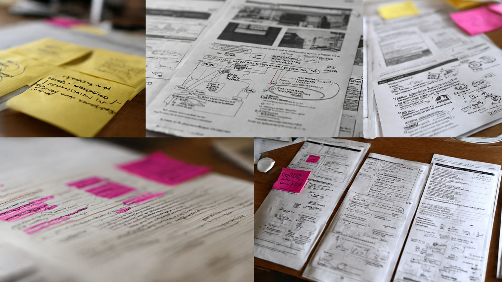
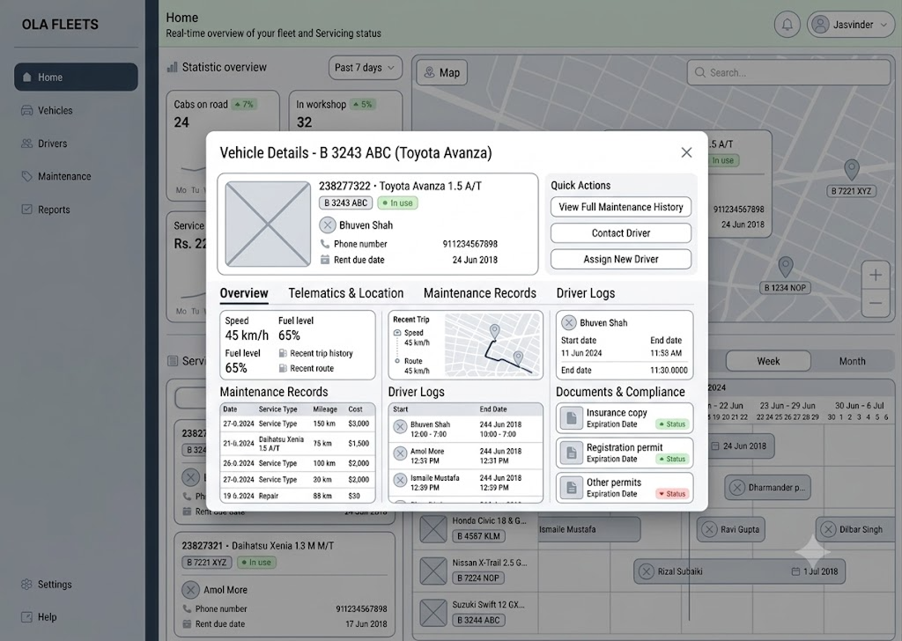

Creating a Single Source of Truth for Fleet Operations
Led the redesign of Ola's fleet operations ecosystem, replacing fragmented spreadsheets and paper-based workflows with a unified platform that improved allocation efficiency by ~80% and reduced manual reporting by ~65%.

Strategic Context
Senior Product Designer led UX strategy, research, service mapping, workflow redesign, and end-to-end product design for Ola's fleet operations ecosystem.
Fleet Management Platform digitizing vehicle allocation, servicing, tracking, and operational workflows for Ola-owned vehicles.
Fleet Operations Teams · Workshop Staff · Garage Managers · Leadership Teams · Drivers
Critical fleet operations relied on paper registers, spreadsheets, emails, and phone calls, resulting in poor visibility, delayed vehicle allocation, and inefficient workflows.
Understanding the Problem
As the lead designer for Ola's Fleet Management platform, I was tasked with improving fleet allocation operations for Ola-owned vehicles.
Through field visits and stakeholder interviews, I discovered that vehicle readiness, servicing, and allocation were managed through disconnected spreadsheets, paper records, emails, and calls. Without a shared source of truth, teams struggled to coordinate efficiently, leading to delays, manual work, and poor operational visibility.
Driver Registration
Complex English-heavy forms created onboarding friction for drivers with varying literacy levels.
Workshop Tracking
Vehicle status was maintained in paper registers — no way to know readiness in real time.
Fleet Allocation
Teams lacked accurate visibility into vehicle readiness, leading to misallocations and delays.
Reporting
Daily updates required manually creating spreadsheets and emailing stakeholders — error-prone and time-consuming.
Discovery: Understanding Operations on the Ground
Rather than relying on assumptions, I spent four weeks observing how fleet operations worked across workshops and garages.
Through site visits, shadowing sessions, and interviews with workshop staff, garage managers, fleet operators, and drivers, I mapped the end-to-end vehicle allocation journey and identified where delays and inefficiencies were occurring.

📋 Research Synthesis — Image PlaceholderWhat I Learned
Insight 1: Paper Wasn't the Problem
Teams needed physical handover records for accountability. Removing paper entirely would fail — the goal was digital augmentation, not replacement.
Insight 2: Data Was Entered Multiple Times
Register → Excel → Email. The same information was repeated repeatedly across different formats, creating redundant effort and opportunities for error.
Insight 3: Nobody Had a Complete Vehicle View
Vehicle history — service records, ownership changes, allocation status — lived across people, paper, and systems. No single person had the full picture.
Insight 4: Drivers Had Zero Visibility
Drivers arrived at garages expecting vehicles that weren't ready. No notifications, no updates, no transparency.
Reframing the Challenge
The Problem Wasn't Fleet Allocation.
The real challenge was creating a single source of truth for the entire vehicle lifecycle — one that connected operations, workshops, garages, and drivers.
Before
Improve Fleet Management Tool
Focus on incremental UI improvements to an existing tool.
After
Create an Operational System Connecting People, Vehicles, and Processes
A complete ecosystem transformation — not a feature enhancement.
The reframe: this wasn't a tool improvement project. It was an operational transformation that needed to connect people, vehicles, and processes through a unified platform.
Building for Scale Without Disrupting Operations
Stakeholders agreed with the vision but couldn't stop operations while a large transformation was underway. I proposed a phased roadmap that delivered value incrementally — reducing risk and building momentum with each release.
Phase 1: Digitize Workshop Reporting
Replaced paper registers with mobile-friendly digital reporting — the first step toward real-time visibility.
Phase 2: Fleet Visibility
Gave operations teams real-time visibility into vehicle readiness and allocation status across all garages.
Phase 3: Vehicle History
Built a complete vehicle timeline — service records, ownership changes, allocation history — in a single view.
Phase 4: Driver Tracking
Gave drivers visibility into vehicle readiness and allocation status through notifications and a simple interface.
Phase 5: Unified Fleet Dashboard
A single source of truth for leadership — real-time fleet performance, utilization, and operational metrics.
Elevating the Experience Within Operational Constraints
Users had varying levels of digital literacy. Many workshop operators were transitioning from paper-based workflows for the first time. The design needed to be accessible, not sophisticated.
The Constraint
Users were comfortable with paper-based workflows but had limited experience with digital tools. Introducing complex enterprise software behaviors would create adoption barriers.
Design Decision
Prioritized familiar patterns and progressive digitization — starting with digital equivalents of paper registers and gradually introducing more sophisticated capabilities.
Collaboration
Worked closely with operations teams and engineers to ensure every workflow could be adopted with minimal training — often designing alongside the teams who would use it daily.
Outcome
High adoption with limited operational disruption. Users transitioned from paper to digital without friction — because the design met them where they were.
Key takeaway: Good enterprise design isn't about adding sophistication. It's about reducing complexity for people doing real work. The most elegant design is the one that disappears into the workflow.
Designing for Operational Reality — Edge Cases That Drove the Design
The platform needed to handle the messy reality of fleet operations — not just the ideal path. These edge cases shaped every design decision.
Vehicle Assigned but Under Service
A vehicle could be allocated to a driver but still undergoing maintenance — the system needed to flag this conflict.
Multiple Drivers Waiting for Same Vehicle
When demand exceeded supply, the system needed to manage prioritization and communicate wait times transparently.
Workshop Updates Delayed
Workshop staff working offline needed to sync updates when connectivity returned — without data loss.
Vehicle Transfer Between Locations
Vehicles moved between garages and cities — the system needed to track location and ownership changes seamlessly.
Driver Missing Verification Documents
Incomplete documentation stalled onboarding. The system needed to flag missing documents and guide drivers through completion.

🔄 Workflow Evolution — Image PlaceholderDriving Alignment Across Teams
This project required coordination across multiple teams with different priorities and operational constraints.
📋 What I Facilitated
- • Research Reviews & Synthesis
- • Prioritization Workshops
- • MVP Planning & Scoping
- • Roadmap Alignment Sessions
- • Delivery Reviews & Retrospectives
🎯 The Outcome
- • Aligned 7+ teams around a shared vision
- • Delivered 5 modules incrementally
- • Maintained operational continuity throughout
- • Built cross-functional trust and momentum
Business Impact
The project transformed fleet operations from fragmented manual processes into a connected operational platform supporting drivers, operations teams, workshops, and leadership.
A note on these numbers: figures above are illustrative, reconstructed to represent the scale and direction of real impact rather than exact reported metrics. What I can say with confidence: the platform fundamentally changed how fleet operations worked — from paper-based to real-time, connected, and data-driven.
What This Project Taught Me
Systems Thinking
The biggest challenge wasn't screens. It was information architecture at an operational level — connecting people, vehicles, and processes through a unified system.
Research
Field visits revealed insights no dashboard analytics could uncover. Leaving the office to observe workflows in context was the most valuable investment of time.
Change Management
Successful transformation required balancing long-term vision with operational realities. Phased delivery built momentum and trust without disrupting daily operations.
Leadership
Influencing stakeholders and breaking down a large vision into achievable milestones was as important as designing the product itself. Alignment enabled delivery.